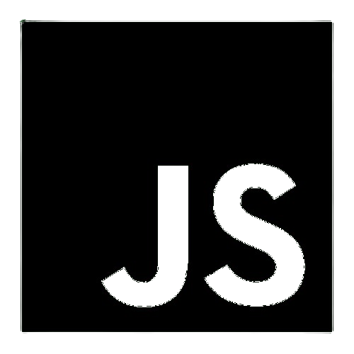
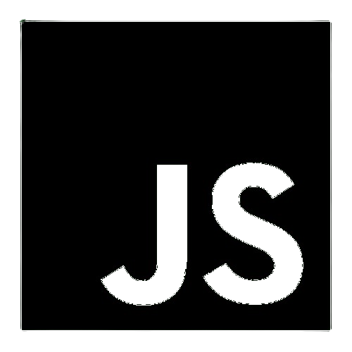

Minhas Habilidades
UI Designer
Participei de diversos projetos no Figma, criando protótipos e layouts
focados em usabilidade e estética. Cada experiência fortaleceu minhas
habilidades em design, colaboração e resolução de problemas.
Também explorei o uso de inteligência artificial no design, utilizando
a plataforma Lovable para modelar meu site. Essa integração entre IA e
design expandiu minha visão criativa e técnica, resultando em soluções
mais inteligentes e personalizadas.
Frontend Development
Desenvolvo interfaces web que aliam estética, funcionalidade e performance. Com experiência prática em HTML, CSS e JavaScript, crio soluções visuais que se adaptam a diferentes dispositivos e oferecem uma navegação fluida. Estou em constante evolução profissional, atualmente em aprendizadigem com React e Blazor para ampliar meu repertório em frameworks modernos e enriquecer meus projetos no portfólio.
Backend Development
Atualmente, venho expandindo minhas habilidades em backend com foco em Python e JavaScript, além de aprofundar meu conhecimento em MySQL e integração com C#. Essa evolução tem fortalecido minha capacidade de atuar no desenvolvimento full stack, permitindo entregar soluções mais completas, escaláveis e alinhadas às demandas do mercado. Cada etapa desse processo tem contribuído significativamente para meu crescimento técnico e versatilidade como profissional.
Linguagens Predominantes
 
